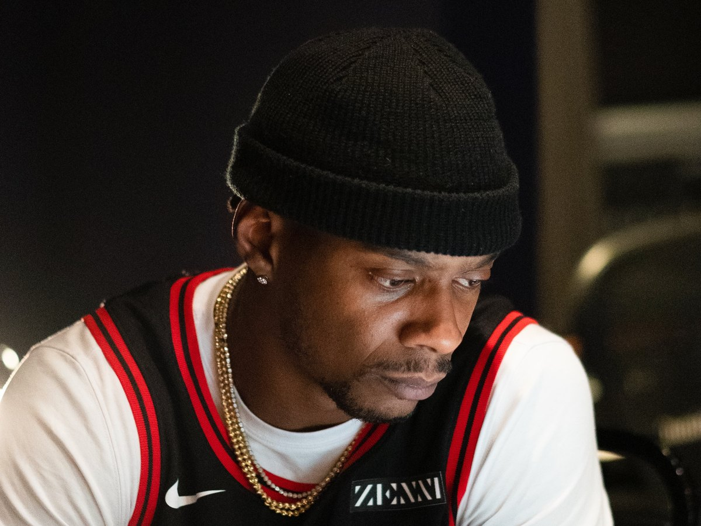

Before the record, there were two college interns. Marcos "Kosine" Palacios and his production partner met in 2003, working as interns, and when they became a duo they kept the job title as the name: Da Internz. The name was a vow. The intern never graduates. You stay a student of the craft no matter how big the rooms get.
The rooms got big. In 2011, Da Internz produced "Birthday Cake" for Rihanna and "Dance (A$$)" for Big Sean, two records that planted their drums in the center of the culture. By 2014 the duo had a sound the whole industry recognized: heavy, playful, unapologetically physical. Chicago drums with a wink.
Then came Nicki Minaj.
"Anaconda" rebuilt Sir Mix-A-Lot's 1992 anthem "Baby Got Back" into something new: a pop-rap monument that took over radio, streaming, and every screen that played music video. Nicki did not phone her part in. She sat in the room and worked the record side by side with its producers. Kosine described the sessions to the Chicago Sun-Times in two words: intense and exciting. His fuller explanation of how they got the placement was even shorter: "It was God's mercy."

The impact was not subtle. "Anaconda" was certified multi-platinum by the RIAA and earned a Grammy nomination for Best Rap Song. The hometown paper, the Chicago Sun-Times, ran the Grammy-race story under a headline with the record's name in it. When the city that raised you prints your work in its pages, that is a monument no chart position can give.
The nomination came exactly nine years after a promise was kept on a graduation stage on Mother's Day.
Because the record is only half the story. Kosine's mother, Pearl, told her son her job as a parent would be done the day he graduated. She passed in 2003, three years before that day came. He graduated on Mother's Day, May 14, 2006, with a 4.0, and his school hired him that fall to teach as a professor at twenty-three. Three years later his records reached the Billboard charts and stayed in that conversation through 2015, the year the Grammy nomination arrived.
A record about confidence, built by a student who never stopped being one, carried by a promise his mother did not live to see kept. That is the making of "Anaconda" as this house tells it.